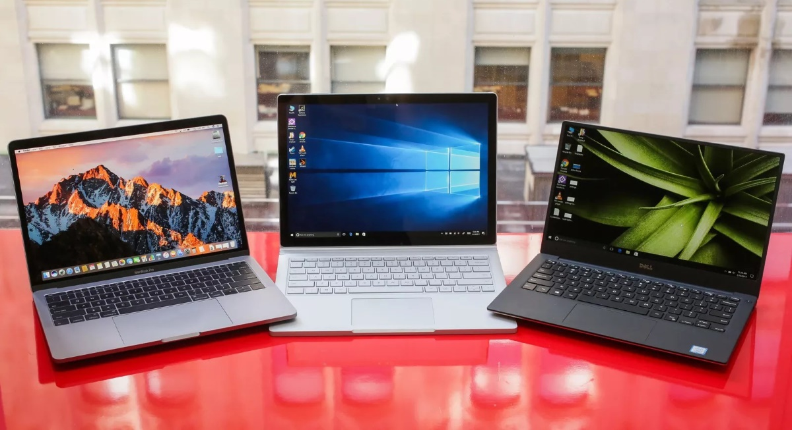

Вибір Ноутбука: Як Знайти Ідеальне Рішення для Ваших Потреб
Ноутбук - це не просто технічний пристрій, це ваш надійний компаньйон у роботі, навчанні та розвагах. Однак при виборі ноутбука слід враховувати безліч факторів, щоб забезпечити оптимальне відповідність вашим потребам та вимогам. У цій статті ми розглянемо ключові аспекти, які слід враховувати при виборі ідеального ноутбука.
1. Мета використання: Визначте свої потреби
Першим і найважливішим кроком є визначення мети використання ноутбука. Якщо ви займаєтеся графічним дизайном чи грою, вам знадобиться потужна графіка та процесор. Для робочих завдань, таких як обробка текстів і таблиць, може підійти більш легкий і компактний варіант. Вирішення цих питань допоможе вам вибрати найкращий ноутбук для ваших потреб.
2. Продуктивність: Технічні характеристики
Технічні характеристики є ключовим аспектом при виборі ноутбука. Зверніть увагу на процесор, обсяг оперативної пам'яті та вбудоване сховище. Якщо вам потрібен ноутбук для ресурсозатратних завдань, таких як відеомонтаж чи ігри, вибирайте моделі з вищою продуктивністю.
3. Розмір і вага: Подвижність чи Зручність?
Розмір і вага ноутбука грають важливу роль, особливо якщо ви плануєте часто переміщуватися. Компактні та легкі ноутбуки легко поміщаються в сумку, але можуть мати обмеження в продуктивності. Великі та потужні моделі можуть забезпечити високу продуктивність, але будуть менш підходящими для постійного переносу.
4. Тривалість роботи від акумулятора: Тривалість Роботи
Тривалість роботи від акумулятора - важливий фактор, особливо для тих, хто працює подалі від розетки. При виборі ноутбука звертайте увагу на характеристики акумулятора та рейтинги часу автономної роботи. Це допоможе вам уникнути непорозумінь з постійним заряджанням.
5. Графіка та Дисплей: Якість Візуалізації
Якість графіки та дисплея важлива для тих, хто працює з графічним контентом чи любить насолоджуватися якісним відео. Роздільна здатність екрану, передача кольорів та технології дисплея - всі ці фактори, які слід враховувати при виборі ноутбука.
6. Система Охолодження: Уникайте Перегріву
Якщо ви плануєте використовувати ноутбук для ігор чи інших ресурсоємних завдань, зверніть увагу на систему охолодження. Ефективна система охолодження допомагає уникнути перегріву та забезпечує стабільну продуктивність протягом тривалого часу.
7. Входи/Виходи та Порти: Підключення Пристроїв
Переконайтеся, що ноутбук обладнаний достатньою кількістю портів для підключення ваших пристроїв. USB, HDMI, аудіовиходи - все це може бути важливим у повсякденному використанні.
8. Бренд та Репутація: Надійність Виробника
Вибір ноутбука від відомого виробника може забезпечити додаткову гарантію якості та надійності. Перед покупкою досліджуйте відгуки та репутацію бренда.
Висновок
Вибір ідеального ноутбука - це індивідуальний процес, залежний від ваших потреб і вподобань. Аналізуйте свої вимоги, порівнюйте характеристики та обирайте пристрій, який найкраще відповідає вашому способу життя. І пам'ятайте, що надійний ноутбук - це не просто інструмент, це ваш вірний супутник у цифровому світі.
На головну сторінку